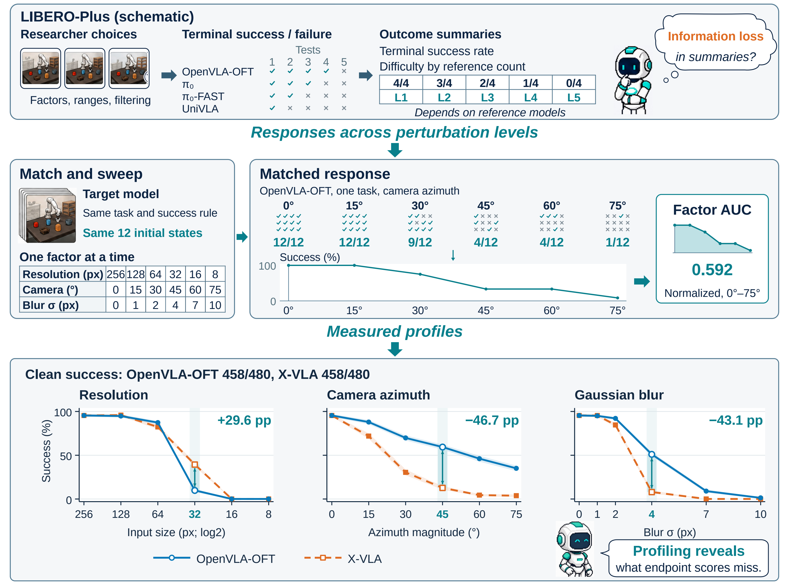
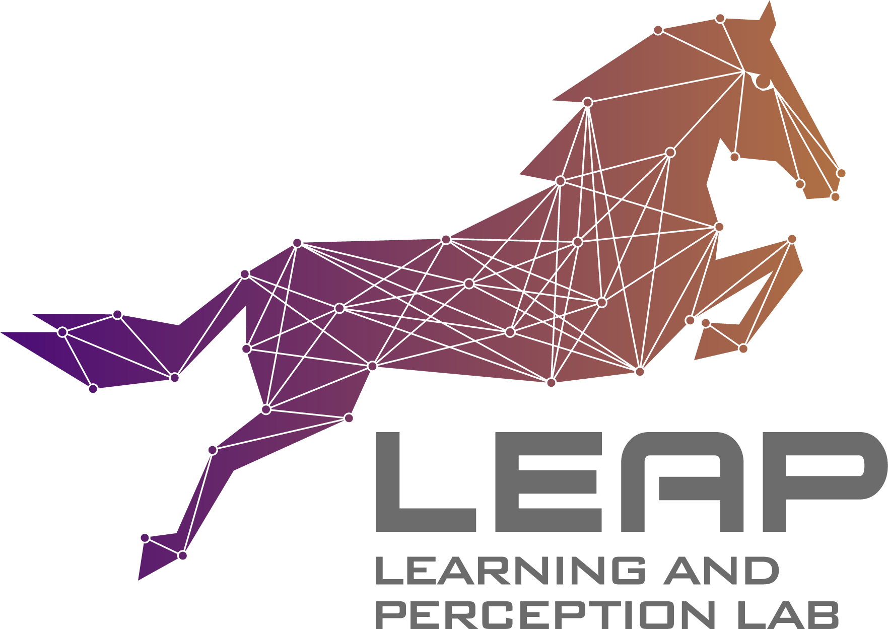
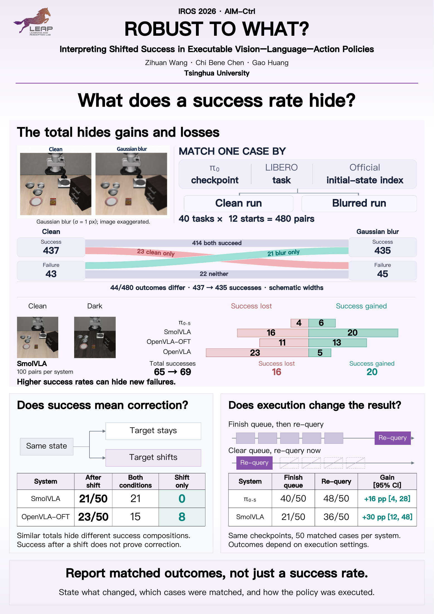
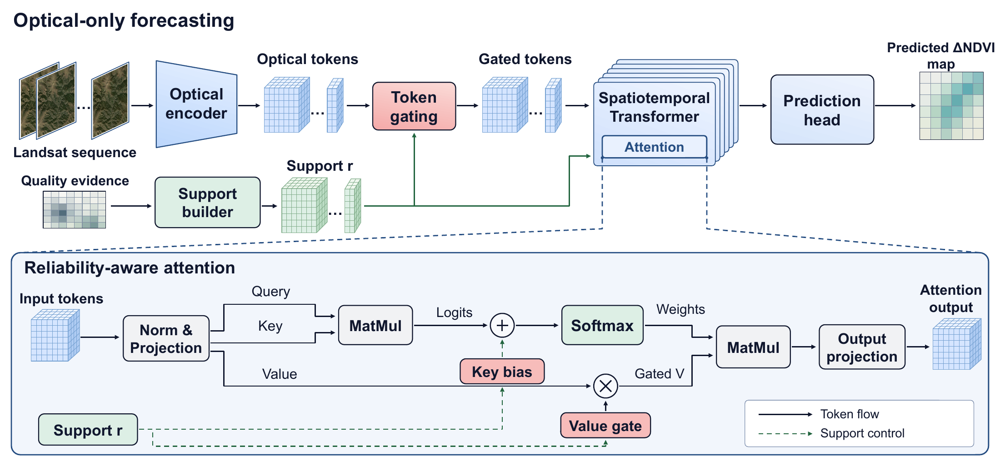
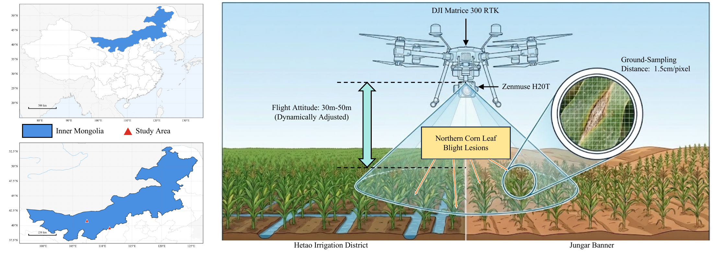
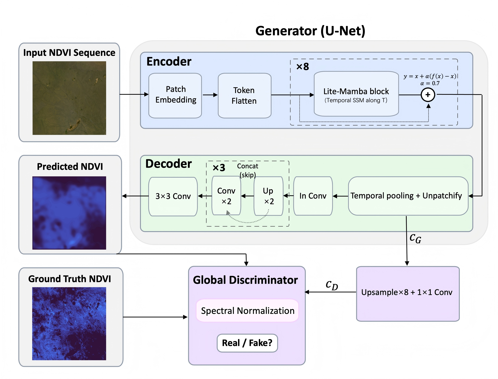
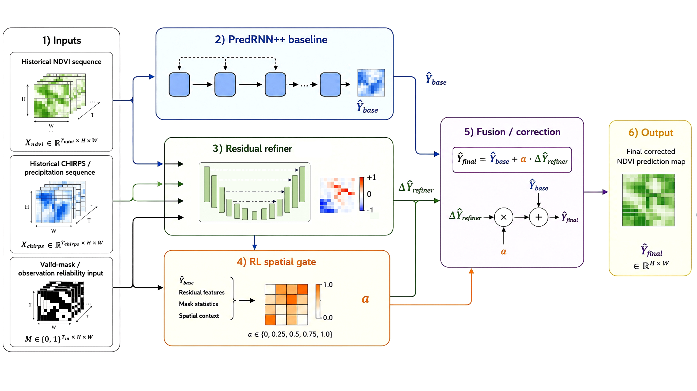

ICRA 2027 Submitted
Beyond Clean Success: Matched Response Profiling for Factor-Conditioned VLA Evaluation
Matched response profiles reveal task and condition differences that aggregate success rates can hide.
I'm an undergraduate in Agricultural Intelligent Equipment Engineering at the College of Engineering, China Agricultural University. I enrolled in September 2024 and expect to graduate in June 2028.
My research focuses on vision-language-action models and robot learning. I'm interested in evaluating robot capabilities and understanding when past experience remains useful.

Since March 2026, I've been a research intern at LEAP Lab, working with Prof. Gao Huang at Tsinghua University.
Looking ahead
I want to understand what evidence supports comparing and choosing robot policies. This means studying how tasks, initial conditions, perturbations, execution protocols, metrics, and decision rules shape what an evaluation can tell us.
When tasks or conditions change, which past experiences remain useful, and which become misleading? I'm interested in post-training that teaches policies to selectively reuse useful experience, suppress what no longer applies, and update their judgments with new evidence.
Mar. 2026 — present
Understanding what success rates tell us about robot policies.

ICRA 2027 Submitted
Matched response profiles reveal task and condition differences that aggregate success rates can hide.

IROS 2026 · AIM-Ctrl Workshop Poster
Event, reference construction, and execution protocol determine which reliability claim a shifted success rate supports.
Mar. — Aug. 2026
Algorithm Intern
I worked on VLA-based robot manipulation for a seat-belt inspection task, focusing on fine alignment and insertion.
My early undergraduate research focused on remote sensing and intelligent agriculture. I studied grassland vegetation forecasting from satellite time series and maize disease and yield analysis from UAV imagery, with an emphasis on spatiotemporal modeling and efficient visual models.
The four papers below grew out of this work. They gave me experience in developing models, designing experiments, interpreting results, and writing research papers. This experience provides a foundation for my current research in robot learning and evaluation.

IEEE J-STARS · 2026 Accepted
QA-retained observation counts guide attention for grassland NDVI forecasting across geographic holdouts.

Agriculture · 2026
A CNN–Mamba dual-stream framework combines local disease features and field-scale context for maize disease and yield analysis.

IEEE IGARSS · 2026 Poster
Mamba-inspired temporal modeling meets conditional generation for forecasting grassland NDVI from satellite time series.

IEEE AP-GARSS · 2026 Poster
A one-step RL gate chooses where and how strongly to correct residual errors in predicted NDVI maps.
* Equal contribution.
Outside research, I enjoy playing basketball and staying active. Music is a big part of my life: I'm a huge Kanye West fan, and I also love listening to Daniel Caesar, Tyler, the Creator, and NJZ.
Music, records, and life in between.